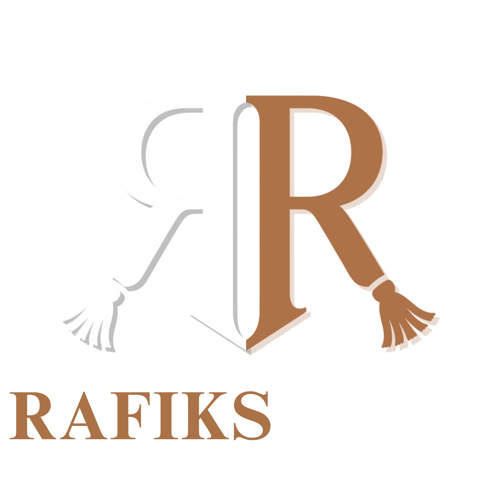
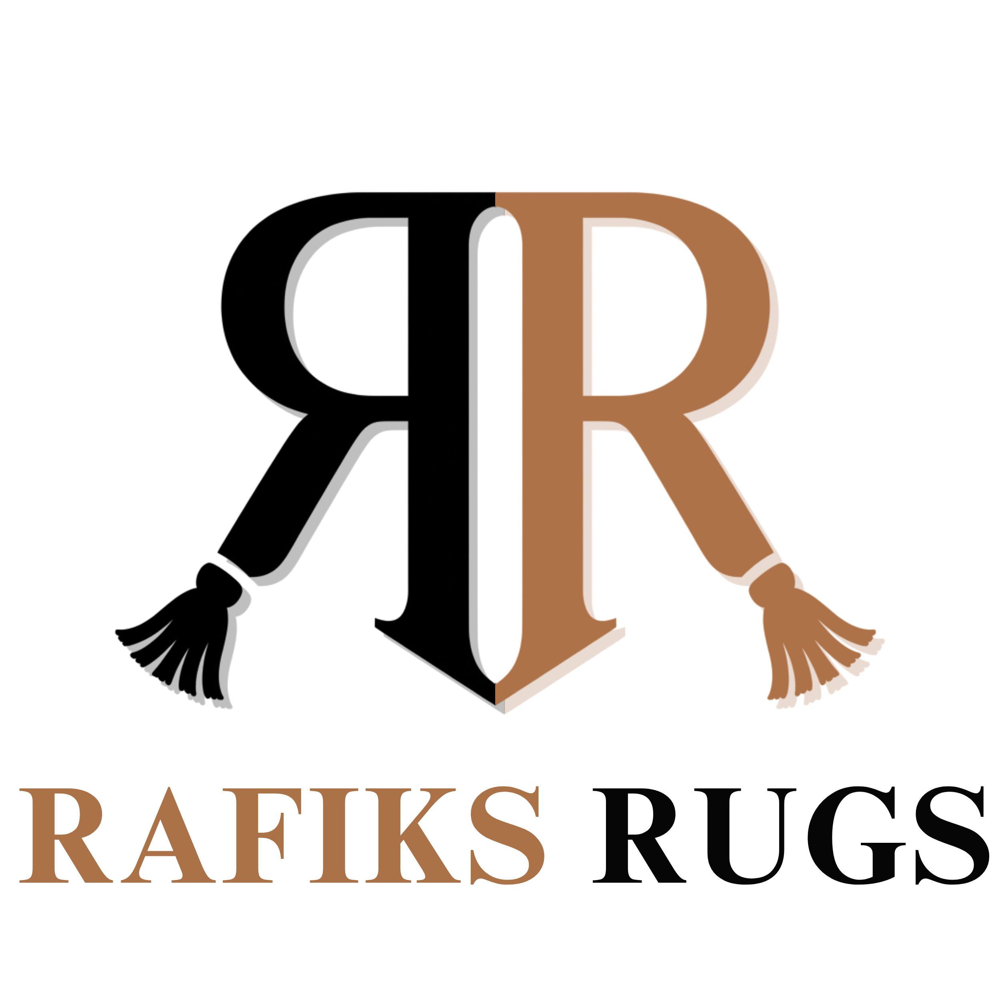

Brand and digital design system · September 2026

A warm, expressive ecommerce identity built to make rug discovery easier, product presentation stronger, and every interaction feel considered.
01 · Direction
The new design feels lively, distinctive, trustworthy, and easy to shop, with a mobile-first, responsive experience.
Large imagery, direct pricing, clear categories, useful specifications, and visible purchase actions.
Copper accents, quiet neutrals, plain-language guidance, shipping cues, care details, and secure-checkout messaging.
Bold scale shifts, rounded forms, staggered reveals, tactile hero interaction, and asymmetrical product storytelling.
Compact section rhythm, touch-safe controls, horizontal discovery, bottom-sheet dropdowns, and simplified checkout summary.
02 · Current landing page
Menu · Search · Category pages · Product pages · Shipping and returns · Rug care · Scroll-to-top
Hero, categories, filters, search, related rugs.
Pricing, inventory, material, origin, size, care, returns.
Quick view, persistent cart, checkout steps, email and sourcing request.
03 · Proposed logo set
Concepts test elegance, personality, textile cues, and recognition at ecommerce scale.
Script and ornamental serif routes feel crafted and distinctive, but lose clarity faster at navigation and mobile sizes.
Woven letterforms create a direct rug cue. Mirrored RR monogram offers strongest balance of craft, legibility, and scalable recognition.
04 · Identity

Mirrored “R” forms create a balanced monogram. Tassel terminals connect mark directly to rugs and textile craft. Copper adds warmth; high-contrast companion color keeps mark legible.
05 · Color and typography
Shop purple (#5A31F4) and payment-network colors remain reserved brand colors—not part of Rafik’s core palette.
Soft, durable, and selected to ground your room with warmth and character.
Collection / 2026 · Add to cart · Product details
06 · UI language
Custom dropdown replaces OS-native menus. Search appears automatically when option count exceeds six; mobile uses a bottom sheet.
Category cards, filter pills, product cards, search results, related products.
Quick view, size selector, quantity stepper, cart panel, staged checkout.
Shipping banner, care guidance, stock status, request form, payment marks.
07 · Experience rules